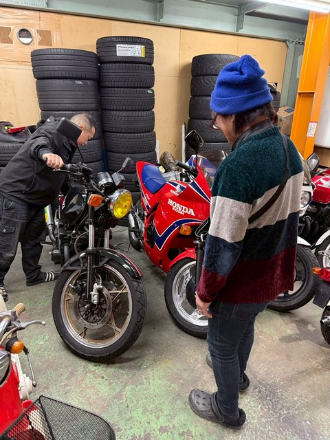
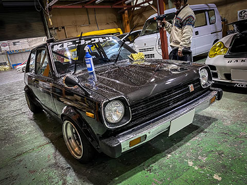
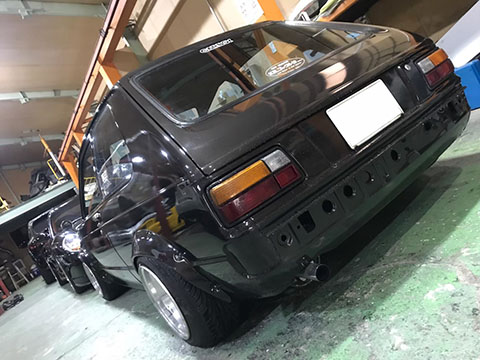
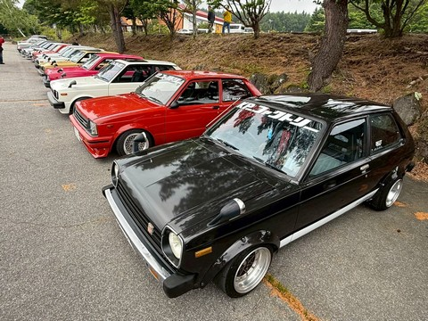
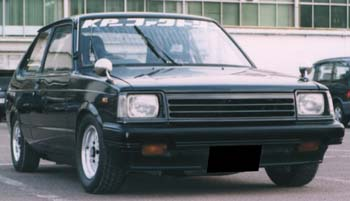
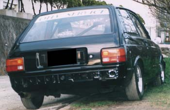
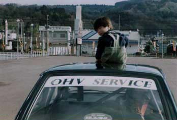
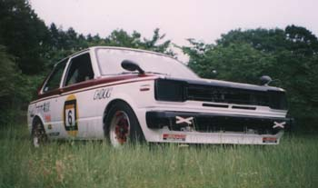

MASA
プロフィール
何かひとこと書くスペースSHINの弟。得意技は朝飯30秒。
誰よりも車高が低い事に幸せを感じるナイスガイ。
今日もセカンドマシンのレーシングカーで買い物に。

| Car Specs 現在の車、TUNE DATA を記載 |



ー 軌跡 ー
| Car Specs コンセプト：シャコベタ！！ エンジン：4K改5K（ピストン80.5mm），ポート加工＋1.2mm面研ヘッド，加工70度カム，TRDバルブスプリング（ダブル），ロッカーアームカラー，クロモリフライホイール，ソレックス44，4-1タコ足，オリジナルマフラー，5速クロス，他 足廻り：フロント車高調整EP71用ショート＋5.4kg/mm，ピロアッパーマウント，タワーバー（ゲリ氏の遺品），リア86用ショック＋4.2kg/mm 他：バケットシート（中川氏の遺品） 自慢：アールズホースに浸っちまいました |



